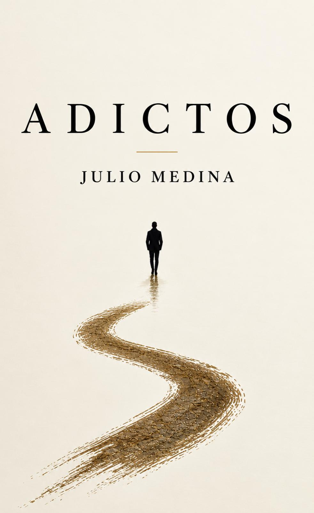

Adictos
Julio Medina
We are all addicted to something. To a person. To an emotion. To money. To power. To validation. To pain. To a version of ourselves we don’t know how to let go of.
ADICTOS is a raw and honest exploration of the things that quietly take control of our lives. Through personal experiences, real stories, and reflections born from survival, I explore relationships, loss, loneliness, migration, ambition, addiction, and the deeply human need to belong.